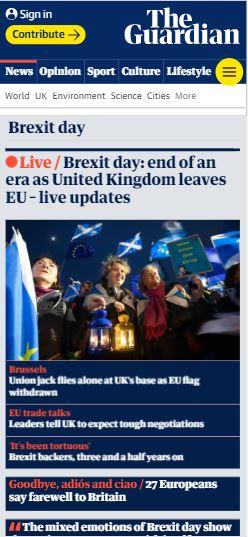

Alignment
Brigham Young University-Idaho
"I really like the way the concept of aligment was used in this webpage. Everthing was align based on their group of interrest.It gives a sense of cohesiveness"
White Space
lemonde.fr

" The concept of white space here is really well applied. It makes the website to breathe and look neat"
Proximity
theguardian.com
"The idea of proximity is well applied here. The elements are gathered according to their topics Most the headlines have subheadlines which reinforce to the reader the idea that the subjects read are related "